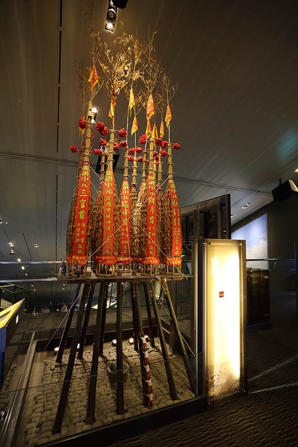
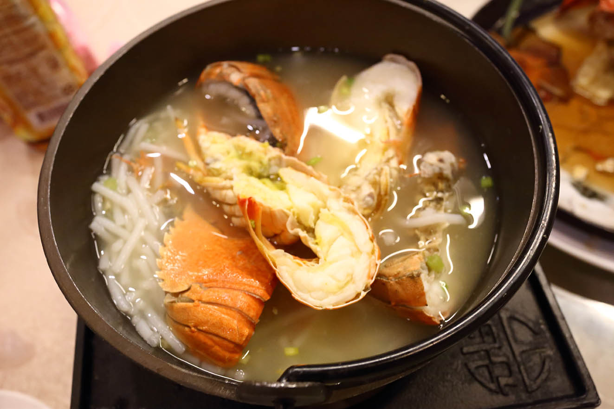

宜蘭半日遊
假日的宜蘭到處都是人擠人，所以這次我們趁著週五大家還在上班時來到宜蘭玩，享受不用人擠人的愜意。
蘭陽博物館
這次來宜蘭的重點是
蘭陽博物館，所以一出雪隧當然是直奔這裡了。
蘭陽博物館是由姚仁喜先生設計，博物館建築量體是以北關海岸一帶常見的單面山為設計依據。
於2004年開工建造。2010年10月16日正式開館。
館內是以幾何作為設計元素，站在地面望向上方玻璃屋頂會有空間的錯置感。
展示多以實品為主，連這麼大的漁船都搬進來了
傳統泰雅家屋

宜蘭頭城「搶孤活動」的孤棚及孤棧模型
參觀博物館大約需要2個小時以上
建議大家要留意閉館時間喔
紅螃蟹海鮮餐廳
蘭陽博物館旁就是烏石港，周邊就有不少海鮮餐廳，
逛完博物館後來這補充點能量當然是最好的選擇了。
只是我們沒在這吃，而是跑到濱海路上一家以無菜單方式點餐的紅螃蟹海鮮餐廳，
價位有500,800,1500三種。

沒有每道菜都拍，謹以以上作為代表
料理味道不錯，很新鮮，有物超所值的感覺（我們吃不完還打包了）
宜蘭車站幾米公園
一直想來幾米公園，但都沒來，這次來宜蘭當然要來逛一下
一起走向春天的下午
呿呿噹森林
向左走，向右走
有別於白天的色彩豔麗，夜晚的幾米公園在燈光的搭配下，
有些神秘憂鬱的感覺。 晚上來這還是建議結伴較適合，
因為有些地方還真的有點黑。
時間不早，打道回府了